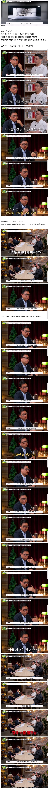
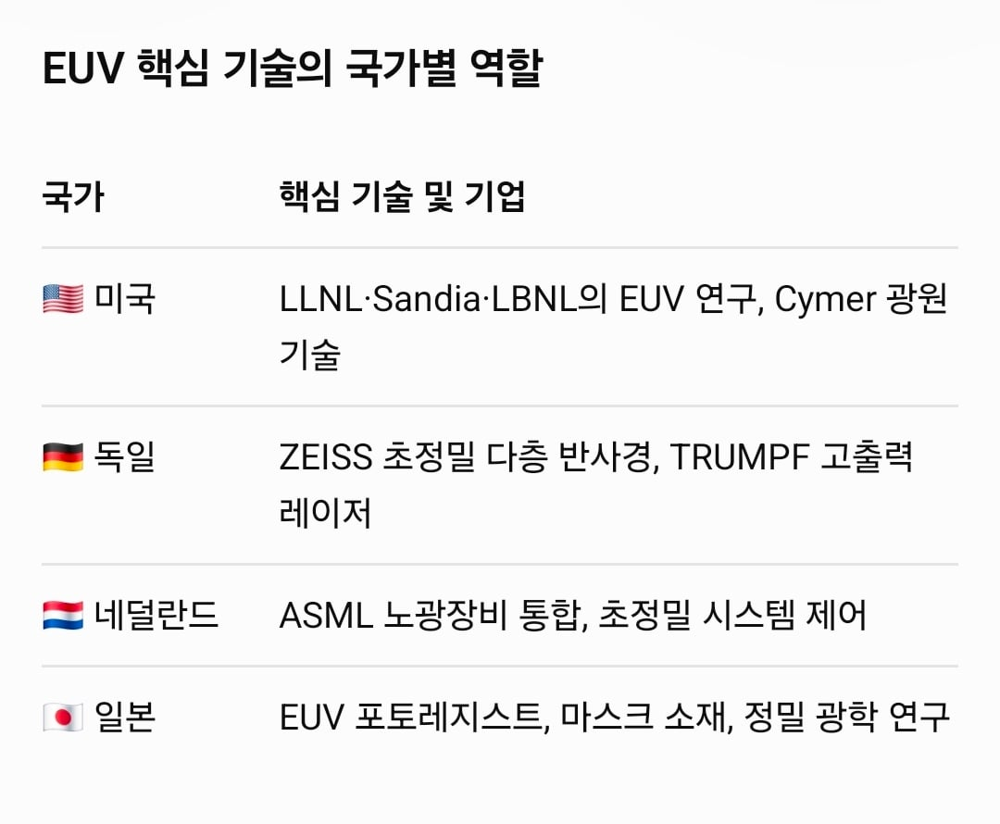

원천기술 대부분이 미국이 갖고 있고
독일 칼자이스 렌즈
일본 포토레지스트
등 블루팀 합작품임
심지어 웨이퍼 만드는데 필요한 천연 초고순도 석영 도가니 재료가 미국 노스캐롤라이나주 스프루스파인에서밖에 안나옴
기술 자체는 70년대에 이미 논문 정립이 됐는데
상용화까지가 30년 걸림


원천기술 대부분이 미국이 갖고 있고
독일 칼자이스 렌즈
일본 포토레지스트
등 블루팀 합작품임
심지어 웨이퍼 만드는데 필요한 천연 초고순도 석영 도가니 재료가 미국 노스캐롤라이나주 스프루스파인에서밖에 안나옴
기술 자체는 70년대에 이미 논문 정립이 됐는데
상용화까지가 30년 걸림

Duv라고 이전단계 광원 마개조해서 양산하려고 하는거.
Euv이전 기계인 duv기계로 여러번조져서 겨우만드는식이던데 그래서 수율이개판이라 생산단가가 훨씬높음
DUV로 연속 3번 뚫기
EUV로 한번에 뚫기
DUV 결과물이 EUV보다 구릴꺼
DUV는 통제가 안됐거든
셋업때 보긴했는데 진짜 복잡하고 펩아래층에도 장비가 이어져있음 중간에 계속 조정이안되서 막히니까 독일에서 기술자들 와서 고치더라 팀도 다국적이라 스페인,태국,한국 엔지니어들이 작업하고 일반 반도체 타 공정이랑은 비교가 안되긴함.. 설비가 2000억인데 업그레이드만 1000억이라고 해서 놀랬음
중국이라고 노는건 아니라서 제작 시도해서 나온 잔해같은걸로 만든 자외선 장치들 헐값에 시장에 풀려있음
짱 들이 쓸고간(만들고간) 자리나 분야는 가격도 초토화되어있음 ㅋㅋㅋㅋ
필수품이라면서? 그럼 저거 없이 어떻데 중국은 만드는건데?